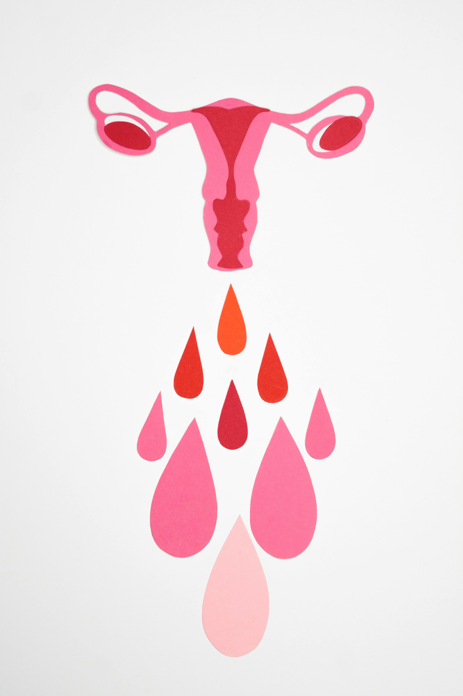
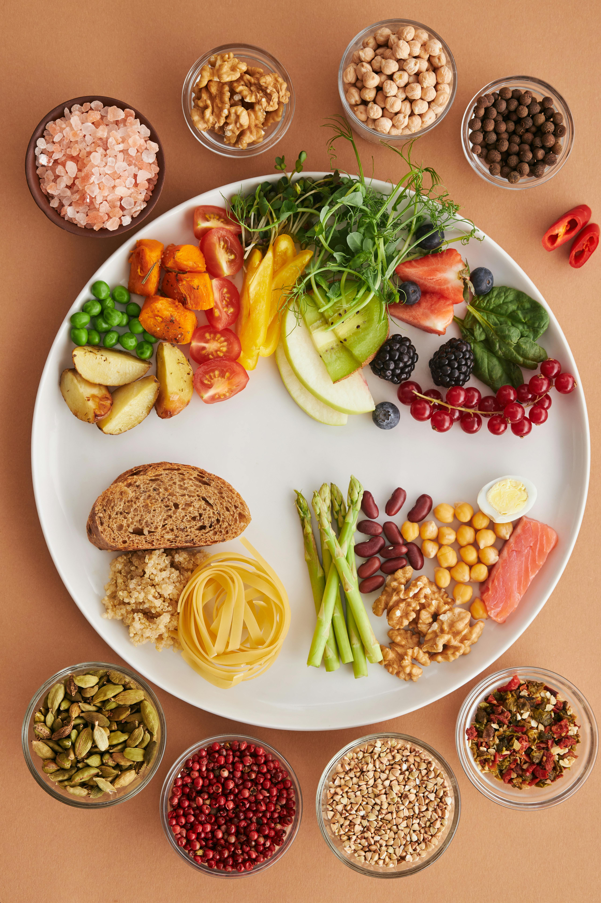
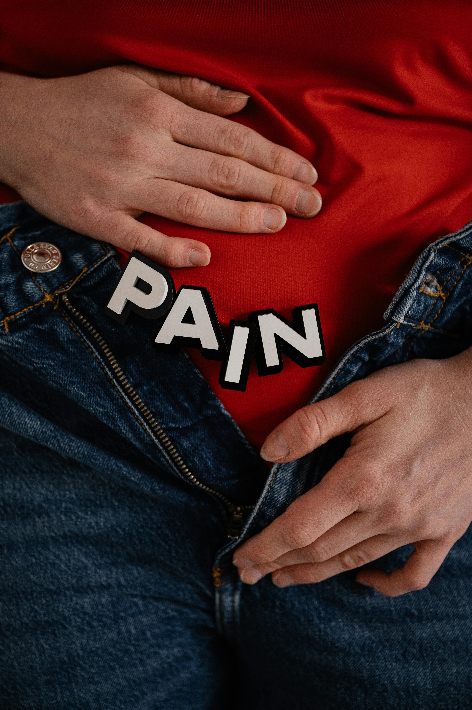
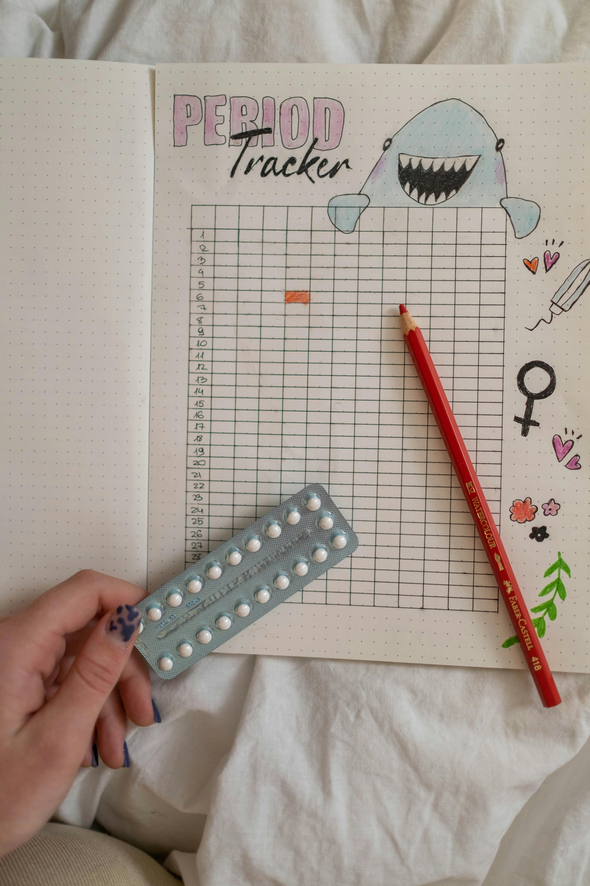

Nutrition for PCOS — evidence-based dietary guidance for hormonal balance
Practical, research-backed advice on what to eat to manage PCOS symptoms and support your hormonal health.
Health & wellbeing
Evidence-based articles, guides, and resources — all written for women, by women.
Featured articles

Understanding how your hormones shift throughout the month can transform the way you train. Learn how to work with your cycle, not against it.
Read article →
Practical, research-backed advice on what to eat to manage PCOS symptoms and support your hormonal health.
The science behind why moving your body is one of the most powerful tools for managing anxiety, depression, and stress.

When is it safe to start moving again? What does your body need? A gentle, evidence-informed guide for new mothers.

A review of current research on how endometriosis affects your capacity for intense training and what modifications help.

How to adjust your nutrition intake across the four phases of your cycle to maximise energy, recovery, and performance.